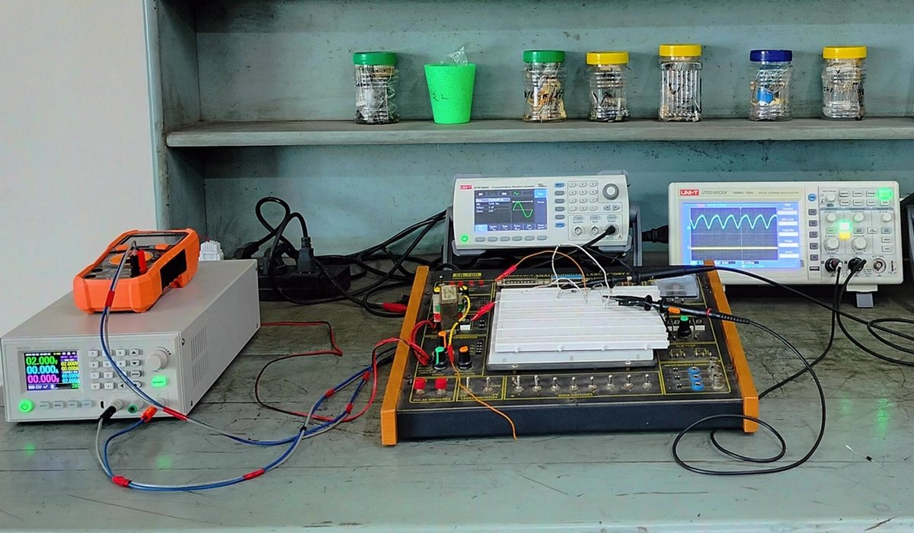
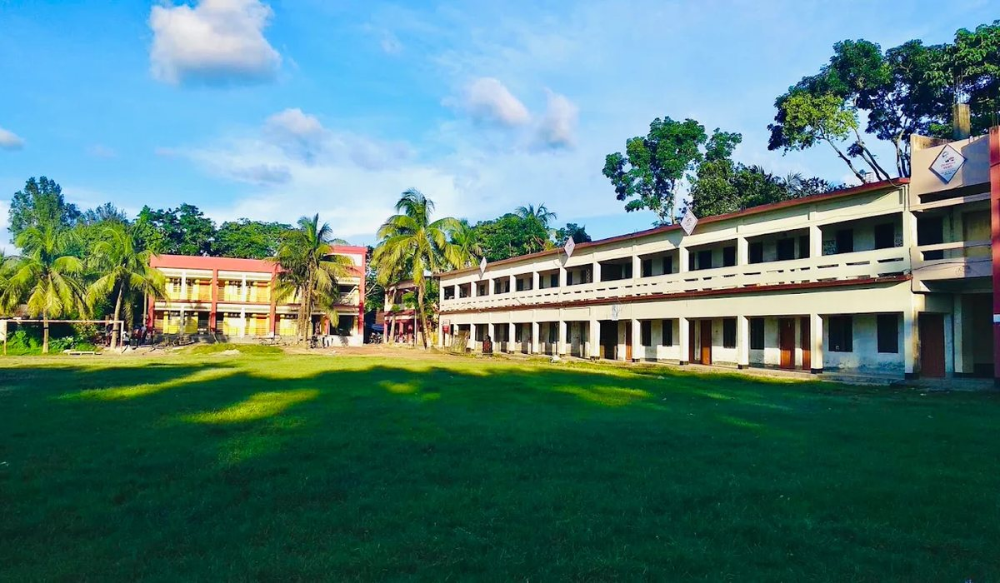
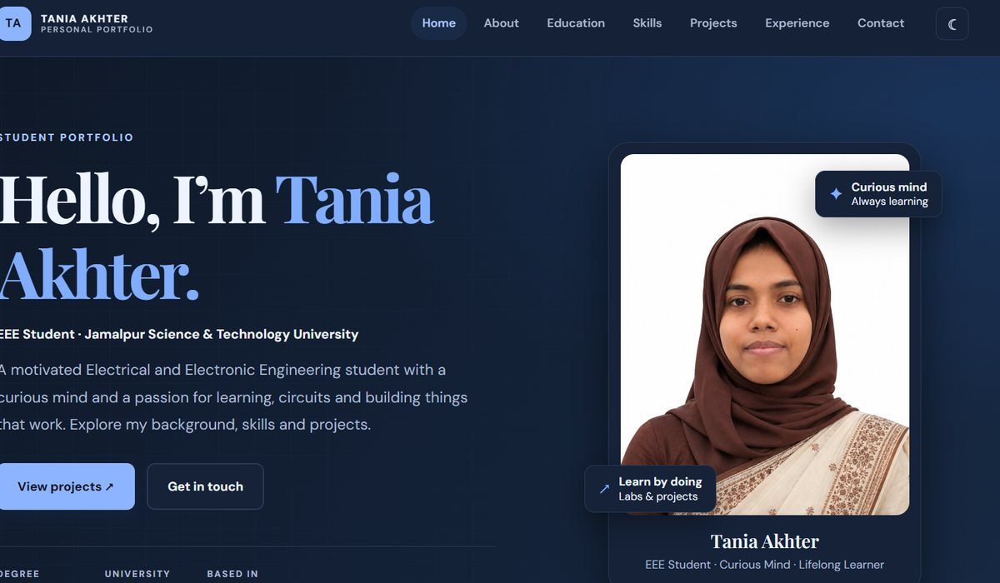

01
Undergraduate Engineering Studies
JSTU · Ongoing
Pursuing Electrical and Electronic Engineering (EEE), developing analytical skills in circuit theory, electronics, electromagnetic field theory and mathematical modelling.
Milestones & activities
Hands-on learning inside labs, active coursework, project work and academic excellence.
Activities & responsibilities
JSTU · Ongoing
Pursuing Electrical and Electronic Engineering (EEE), developing analytical skills in circuit theory, electronics, electromagnetic field theory and mathematical modelling.

EEE laboratories · Coursework
Practical experience designing and testing circuits on breadboards with oscilloscopes, function generators and multimeters, plus simulation in Proteus and LTspice.

Embedded systems · DIY
Embedded projects using Arduino, sensors and actuators, programmed in C/C++ to automate real-world tasks.

SSC & HSC · GPA 5.00 / 5.00
Perfect GPA in SSC at Sholla School and College and in HSC (Science, 2023) at Dinajpur Government Women’s College, building a strong base in physics and mathematics.

Seminars · Skill development
Technical workshops on web development, programming fundamentals and engineering software, and involvement in campus academic and technology communities.

Self-directed · Personal projects
Responsive personal websites and interfaces built with modern HTML, CSS, JavaScript and UI design principles.
Industrial internships, research publications, advanced engineering projects and technical certifications will be featured here as my journey continues.
LET’S CONNECT
I’m always happy to talk about engineering, learning and collaboration.
Contact me ↗